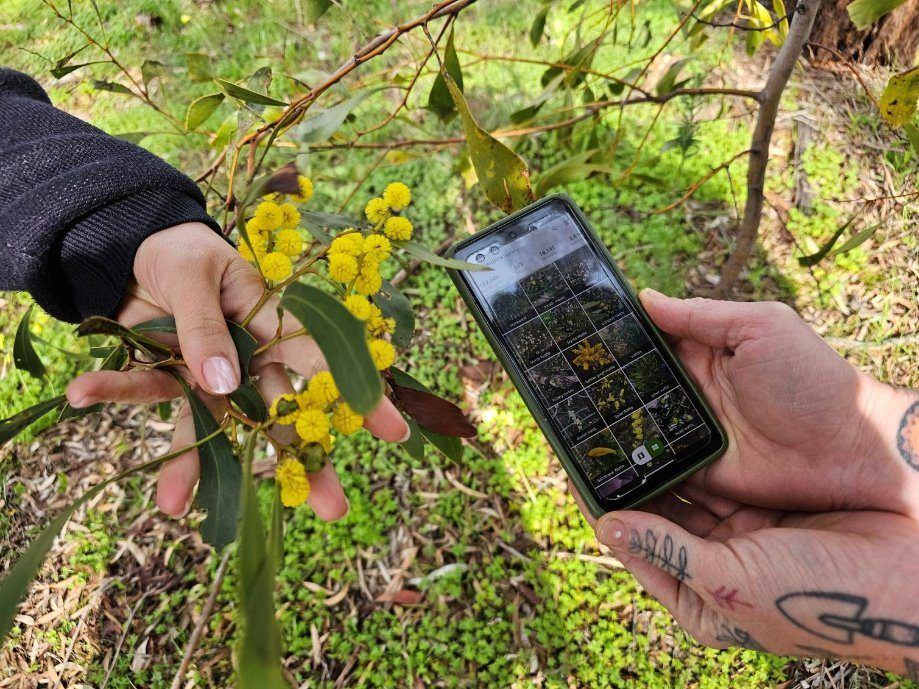

Recording what species you have
A species list for your block is the most valuable record you can hold, and the best time to make one is before a fire. Afterwards, it is the only way to answer the question that matters: not what came back, but what didn’t.
iNaturalist makes this possible without botany. You photograph things; the app’s AI suggests an identification and a community of identifiers confirms or corrects it. Records flow through to the Atlas of Living Australia, so the list becomes part of the public record rather than sitting on your phone.
Protocol — building a species list
- The method
- Walk your block and photograph one of every different thing you see. Don’t try to identify anything on the spot.
- Photographing so it can be identified
- Three shots per plant: the whole plant, a close-up of the leaves, and the flower or fruit if there is one. Bark and habit help for trees.
- Before a fire
- Walk it in spring, when most things are flowering and identifiable. Repeat every year or two. This is your baseline.
- After a fire
- The first spring above all — fire-cued germinators appear then and much of it won’t be visible again for decades (2.2). Then each season for the first two years.

Recording signs of regrowth, not just plants
After a fire, photograph the evidence as well as the species: epicormic shoots running down a burnt trunk, fresh growth at the base of a stump, green spears in a blackened tussock1, a carpet of seedlings. These tell you which strategy each plant is using (2.2), and therefore whether it is coming back at all.
Your list, and where to find it
Once you have been recording for a while, zoom to your property in iNaturalist and you have your own species list23 — every observation anyone has made there, which you can print as a checklist to work from (2.2). For a head start before you have built one, the Atlas of Living Australia will list what has been recorded in the surrounding country (2.2).
Natives and weeds
The app flags introduced species.2 Anything it names as introduced goes on your weed list for Part 4 — and a plant appearing on your place for the first time after a fire is worth acting on early.